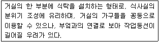
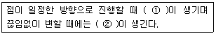
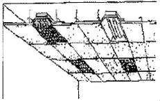

실내건축기능사 (2006-01-22 기출문제)
1과목: 실내디자인
1. 문과 창문의 설명으로 틀린 것은?
- 한 공간과 인접된 공간을 연결시킴
- 지붕의 형태에 영향을 줌
- 가구 배치와 동선에 영향을 줌
- 통풍과 채광을 가능하게 함
(정답률: 88%)

2. 다음 설명에 알맞는 식사실의 유형은?

- 식사실(dining, D)
- 거실-식사실-부엌(living dining kichen, LDK)
- 거실-식사실(living dining, LD)
- 식사실-부엌(dining kitchen, DK)
(정답률: 78%)
3. 다음 선에 대한 설명문에서 ( )안에 알맞은 말로 짝지어진 것은?

- ① 곡선, ② 직선
- ① 소극적인 선, ② 적극적인선
- ① 포물선, ② 곡선
- ① 직선, ② 곡선
(정답률: 91%)
4. 좋은 조명의 기준에 대한 설명 중 옳지 않은 것은?
- 광원이 직접 눈에 보이거나 반사가 없어야 한다.
- 그늘이나 그림자가 생겨서는 안된다.
- 광색이 좋고 방사열이 적어야 한다.
- 등기구의 배치와 가구의 조화가 필요하다.
(정답률: 51%)
5. 다음 중 명도와 채도가 가장 높은 색은?
- 연두
- 청록
- 노랑
- 주황
(정답률: 69%)
6. 실내를 수평방향으로 구획할 때 구획의 효과가 가장 큰 것은?
- 색채를 다르게 구획한다.
- 패턴(문양)에 변화를 주어 구획한다.
- 재료를 다르게 하여 구획한다.
- 평면의 높이를 다르게 구획한다.
(정답률: 65%)
7. 실내디자인 요소에서 위치만 표시할 뿐 길이, 폭, 깊이 등이 없는 요소는 무엇인가?
- 형태
- 선
- 면
- 점
(정답률: 88%)
8. 공간을 구성하는 기본 단위는?
- 점
- 선
- 면
- 입체
(정답률: 63%)
9. 천창(天窓)의 설명으로 가장 거리가 먼 것은?
- 미술관, 박물관, 공장 등에서 채광상의 요구를 해결하기 위해 많이 이용된다.
- 밀집된 건물에 둘러싸여 있어도 일정량의 채광이 확보된다.
- 건축계획의 자유도가 증가한다.
- 벽면 이용을 개구부에 상관없이 다양하게 활용할 수 있다.
(정답률: 43%)
10. “디자인의 원리 중 규칙적인 요소들이 반복으로 나타나는 통제된 운동이다.”는 어떤 원리에 대한 설명인가?
- 비례
- 조화
- 통일
- 리듬
(정답률: 84%)
11. 상점계획에서 고객동선과 종업원 동선이 만나는 곳에 설치하면 편리한 것은?
- 화장실
- 창고
- 탈의실
- 카운터
(정답률: 93%)
12. 두 공간을 상징적으로 분리할 수 있는 벽의 최대높이는?
- 30cm
- 40cm
- 50cm
- 60cm
(정답률: 70%)
13. 실내디자인에서 추구하는 궁극적인 목표와 가장 거리가 먼 것은?
- 실내공간의 효율성을 높인다.
- 아름다움과 개성을 추구한다.
- 경제성이 추구되어야 한다.
- 공익성을 추구한다.
(정답률: 68%)
14. 주택의 각 공간에서 개인생활 공간에 속하는 것은?
- 응접실
- 거실
- 침실
- 식사실
(정답률: 85%)
15. 실내디자인의 개념설명으로 옳지 않은 것은?
- 실내공간을 아름답고 쾌적하게 만드는 것을 말한다.
- 실내마감을 값이 비싼 재료를 사용하여 무조건 최고의 공간으로 고급스럽게 마감하는 것이다.
- 건축의 기본요소인 벽, 바닥, 천정으로 둘러쌓인 내부 공간을 계획, 설계하는 것이다.
- 실내디자인은 주거공간디자인과 상업공간디자인의 두 분야로 나누는 것이 일반적이다.
(정답률: 93%)
16. 다음 그림의 건축화조명 방식을 무엇이라고 하는가?

- 루버조명
- 다운라이트조명
- 광천장조명
- 코브조명
(정답률: 50%)
17. 인체의 쾌적과 건물설계에 영향을 미치는 요소로 가장 거리가 먼 것은?
- 일사
- 공기
- 기온
- 바람
(정답률: 58%)
18. 환기 횟수가 가장 많이 필요한 장소는?
- 거실
- 침실
- 부엌
- 다용도실
(정답률: 88%)
19. 다음 장소 중 잔향시간이 가장 짧아야 할 곳은?
- 콘서트홀
- 카톨릭성당
- 오페라하우스
- TV 스튜디오
(정답률: 86%)
20. 백열 전구에 비해 형광등의 특징이라 할 수 없는 것은?
- 빛효율이 높다.
- 방사 열량이 낮다.
- 휘도가 높다.
- 광색조절이 비교적 용이하다.
(정답률: 35%)
2과목: 실내환경
21. 보통 포틀랜드시멘트의 물리성능 중 응결시간의 기준으로 알맞은 것은?
- 초결 2시간 이상, 종결 20시간 이하
- 초결 1시간 이상, 종결 10시간 이하
- 초결 1시간 이상, 종결 20시간 이하
- 초결 2시간 이상, 종결 10시간 이하
(정답률: 49%)
22. 점토의 성질에 대한 설명 중 옳지 않은 것은?
- 주성분은 실리카와 알루미나이다.
- 양질의 점토는 습윤 상태에서 현저한 가소성을 나타낸다.
- 비중은 일반적으로 2.5 ~ 2.6 정도이다.
- 인장강도는 압축강도의 약 5배이다.
(정답률: 65%)
23. 건축재료에 요구되는 일반적인 성질이 아닌 것은?
- 사용목적에 알맞는 품질을 가질 것
- 가공은 힘들어도 좋으나 가격이 저렴하여야 할 것
- 사용환경에 알맞은 내구성과 보존성을 가질 것
- 대량생산 및 공급이 가능할 것
(정답률: 91%)
24. 다음 중 암면에 대한 설명으로 틀린 것은?
- 안산암, 사문암 등을 원료로 한다.
- 원료를 고열로 용융시켜 세공으로 분출하는 과정을 거쳐 제작된다.
- 경질이며 슬레이트나 시멘트판의 재료로 사용된다.
- 보온, 흡음, 단열성이 우수하다.
(정답률: 40%)
25. 건축용으로는 글라스섬유로 강화된 평판 또는 판상제품으로 주로 사용되는 플라스틱 재료는?
- 멜라민 수지
- 폴리에스테르 수지
- 실리콘 수지
- 페놀 수지
(정답률: 56%)
26. 석질이 치밀하고 박판으로 채취할 수 있어 슬레이트로서 지붕, 외벽, 마루 등에 사용되는 석재는?
- 대리석
- 화강암
- 부석
- 점판암
(정답률: 74%)
27. 다음 중 열가고성 수지는?
- 요소수지
- 폴리우레타수지
- 실리콘 수지
- 염화비닐 수지
(정답률: 67%)
28. 플라스틱 건설재료의 일반적인 성질에 관한 설명 중 틀린 것은?
- 내수성 및 내투습성을 폴리초산비닐 등 일부를 제외하고는 극히 양호하다.
- 전기절연성이 상당히 양호하다.
- 상호간 계면접착이 잘되나, 금속, 콘크리트, 목재, 유리 등 다른 재료에는 잘 부착되지 않는다.
- 일반적으로 투명 또는 백색의 물질이므로 적합한 안료나 염료를 첨가함에 따라 다양한 채색이 가능하다.
(정답률: 60%)
29. 다음 중에서 경화되는 방식이 다른 하나는?
- 시멘트 모르타르
- 돌로마이트 플라스터
- 혼합석고 플라스터
- 순석고 플라스터
(정답률: 49%)
30. 조이너(joiner)에 대한 설명으로 옳은 것은?
- 천장, 벽 등에 보드를 붙이고 그 이음새를 감추고 누르는데 사용된다.
- 계단의 디딤판 끝에 대어 오르내릴 때 미끌어지지 않도록 하는 철물이다.
- 금속재의 콘크리트용 거푸집으로서 치장 콘크리트에 사용된다.
- 구조부재 집합에서 2개의 부재접합에 끼워 볼트와 같이 사용하여 전단에 견디도록 한다.
(정답률: 58%)
3과목: 실내건축재료
31. 응결하기 시작한 콘크리트에 새로운 콘크리트를 이어칠 경우 발생될 수 있는 시공불량의 이음부는?
- 언더컷
- 치장줄눈
- 수축줄눈
- 콜드 포인트
(정답률: 39%)
32. 목재의 재료적 특성에 해당되지 않는 것은?
- 열전도율과 열팽창율이 적다.
- 가연성이 크고 내구성이 부족하다.
- 풍화마멸에 잘 견디며 마모성이 작다.
- 음의 흡수 및 차단성이 크다.
(정답률: 62%)
33. 거푸집에 자갈을 넣은 다음 골재사이에 모르타르를 압입하여 콘크리트를 형성해 가는 공법은?
- 프리팩트 콘크리트
- PS 콘크리트
- 폴리머 콘크리트
- 유동화 콘크리트
(정답률: 55%)
34. 점토제품 중 테라코타의 주된 용도는?
- 단열재
- 장식재
- 구조재
- 방수재
(정답률: 78%)
35. 건축용 강화판유리에 대한 설명으로 틀린 것은?
- 강도는 보통유리의 3~5배 정도이다.
- 현장에서 가공 절단이 불가능하므로 열처리 전에 소요치 수대로 절단가공해야 한다.
- 파괴되어도 세립상으로 되기 때문에 부상을 입는 일이 적다.
- 유리를 100~200℃로 가열 후, 특수장치를 이용하여 균등하게 급격 냉각시켜 제작한다.
(정답률: 45%)
36. 다음 중 고로슬래그 시멘트의 특징으로 틀린 것은?
- 수화열량이 적다.
- 매스콘크리트용으로 사용할 수 있다.
- 초기강도가 작다.
- 해수 등에 대한 내식성이 없다.
(정답률: 55%)
37. 합판의 특성에 대한 설명으로 틀린 것은?
- 함수율 변화에 따른 팽창, 수축의 방향성이 없다.
- 뒤틀림이나 변형이 적은 비교적 큰 면적의 평면재료를 얻을 수 있다.
- 얇은 판을 겹쳐서 만드므로 목재 고유의 아름다운 무늬를 얻을 수 없다.
- 곡면가공을 하여도 균열이 생기지 않는다.
(정답률: 50%)
38. 석재의 표면가공순서로 맞는 것은?
- 혹두기 - 정다듬 - 도드락다듬 - 잔다듬 - 물갈기
- 혹두기 - 도드락다듬 - 정다듬 - 잔다듬 - 물갈기
- 혹두기 - 잔다듬 - 정다듬 - 도드락다듬 - 물갈기
- 혹두기 - 정다듬 - 잔다듬 - 도드락다듬 - 물갈기
(정답률: 77%)
39. 각종 도료의 일반적인 성질에 대한 설명 중 옳지 않은 것은?
- 합성수지도료는 건조시간이 빠르고 도막이 견고하다.
- 수성페인트는 내수성이 없고 광택이 없는 것이 특징이다.
- 에나멜페인트는 도막이 견고하고 내후성과 내수성이 좋다.
- 유성페인트는 내후성과 내알칼리성이 뛰어나다.
(정답률: 58%)
40. 타일에 대한 설명 중 틀린 것은?
- 타일을 용도에 의해 분류하면 내장, 외장, 바닥타일로 구분한다.
- 모자이크 타일은 일반적으로 석기질이다.
- 보오더 타일(boader tile)은 특수형 타일로 가늘고 긴 형태이다.
- 타일은 대부분 내구성이 크고 흡수율이 작다.
(정답률: 52%)
41. 벽돌쌓기에서 같은 켜에서 길이와 마구리가 교대로 나타나도록 쌓기 때문에 외관은 아름답지만, 통줄눈이 되는 곳이 생기므로, 구조부보다는 장식적인 곳에서 사용되는 것은?
- 프랑스식 쌓기
- 영국식 쌓기
- 네덜란드식 쌓기
- 미국식 쌓기
(정답률: 55%)
42. 벽돌에 배관, 배선, 기타용으로 그 층 높이의 3/4 이상 연속되는 세로홈을 팔 때, 그 홈의 깊이는 벽두계에서 최대 얼마 이하로 하는가?
- 1/2
- 1/3
- 1/4
- 1/5
(정답률: 46%)
43. 철근콘크리트 기둥의 최소 단면 치수와 최소 단면적은?
- 100mm, 30000mm2
- 200mm, 60000mm2
- 300mm, 90000mm2
- 400mm, 120000mm2
(정답률: 50%)
44. 다음의 선긋기에 대한 설명 중 옳지 않은 것은?
- 용도에 다라 선의 굵기를 구분하여 사용한다.
- 시작부터 끝까지 일정한 힘을 주어 일정한 속도로 긋는다.
- 축척과 도면의 크기에 상관없이 선의 굵기는 동일하게 한다.
- 한 번 그은 선은 중복해서 긋지 않도록 한다.
(정답률: 76%)
45. 벽, 지붕, 바닥 등의 수직 하중과 풍력, 지진 등의 수평 하중을 받는 중요 벽체는?
- 장막벽
- 배니력벽
- 내력벽
- 칸막이벽
(정답률: 70%)
46. 다음 중 일반적으로 반지름 50mm 이하의 작은 원을 그리는데 사용되는 제도 용구는?
- 빔 컴퍼스
- 스프링 컴퍼스
- 디바이더
- 자유 삼각자
(정답률: 71%)
47. 다음 중 조적식 구조에 대한 설명으로 틀린 것은?
- 벽돌, 블록, 돌 등과 같은 조적재인 단일부재와 접착제를 사용하여 쌓아올려 만든 구조이다.
- 자료 개개의 강도와 접착제의 강도가 전체 구조의 강도를 좌우한다.
- 가장 강력하고 균일한 강도를 낼 수 있는 구조이다.
- 철사, 철망, 철근 등으로 보강이 가능하다.
(정답률: 59%)
48. 높이가 3m를 넘는 계단에서 계단참을 계단 높이 몇 m 이내마다 설치하여야 하는가?
- 1m
- 2m
- 3m
- 4m
(정답률: 36%)
49. 선의 용도에 대한 설명으로 맞지 않는 것은?
- 파단선은 긴 기둥을 도중에서 자를 때 사용하며 굵은 선으로 그린다.
- 단면선은 단면을 윤곽을 나타내는 선으로서 굵은 선으로 그린다.
- 가상선은 움직이는 물체의 위치를 나타내며, 일점 쇄선으로 그린다.
- 입면선은 물체의 괴관을 나타내며, 가는 선으로 그린다.
(정답률: 76%)
50. 도면의 테두리를 만들 때 여백은 최소 얼마나 두어야 하는가? (단, A1 제도용지, 묶지 않을 경우)
- 5mm
- 10mm
- 15mm
- 20mm
(정답률: 62%)
4과목: 건축일반
51. 경첩 등을 축으로 개폐되는 창호를 말하며, 열고 닫을 때 실내의 유효 면적을 감소시키는 단점이 있는 창호는?
- 미닫이 창호
- 미세기 창호
- 여닫이 창호
- 붙박이 창호
(정답률: 72%)
52. 다음 중 석구조에 대한 설명으로 옳지 않은 것은?
- 내구성이 좋다.
- 내화적이다.
- 구조체가 가볍다.
- 외관이 장중하다.
(정답률: 85%)
53. 다음 중 내진, 내풍적이나 내화적이지 못한 구조는?
- 벽돌구조
- 돌구조
- 철골구조
- 철근콘크리트구조
(정답률: 45%)
54. 철골 판보에서 위브의 두께가 춤에 비해서 얇을 때, 웨브의 국부좌굴을 방지하기 위해서 사용되는 것은?
- 스티프너
- 커버 플레이트
- 거싯 플레이트
- 베이스 플레이트
(정답률: 66%)
55. 블록구조 중 블록의 빈 공간에 철근과 모르타르를 채워 넣은 튼튼한 구조이며, 블록구조로 지어지는 비교적 규모가 큰 건물에 이용되는 것은?
- 보강 블록조
- 조적식 블록조
- 장막벽 블록조
- 거푸집 블록조
(정답률: 54%)
56. 다음의 각종 제도용구에 대한 설명 중 옳지 않은 것은?
- T자의 길이는 60, 90, 120, 150cm 등이 있다.
- 자유 곡선자는 원호 이외의 곡선을 자유 자재로 그릴 때 사용한다.
- 곧은 자는 투시도 작도 시의 긴 선을 그릴 때 사용한다.
- 운형자는 지붕의 물매나 30°, 45° 이외의 각을 그리는데 사용한다.
(정답률: 75%)
57. 다음 중 건축구조법을 선정할 때 필요한 선정 조건과 가장 관계가 먼 것은?
- 입지 조건
- 색채 조건
- 건축 규모
- 요구 성능
(정답률: 86%)
58. 나무구조에서 2층 이상의 기둥 전체를 하나의 단일재로 사용하는 기둥은?
- 통재기둥
- 평기둥
- 샛기둥
- 동자기둥
(정답률: 79%)
59. 종이에 일정한 크기의 격자형 무늬가 인쇄되어 있어서, 계획 도면을 작성하거나 평면을 계획할 때 사용하기가 편리한 제도지는?
- 켄트지
- 방안지
- 트레이싱지
- 트레팔지
(정답률: 60%)
60. 목재의 접합에서 널판재의 면적을 넓히기 위해 두 부재를 나란히 옆으로 대는 것을 무엇이라 하는가?
- 쪽매
- 이음
- 맞춤
- 연귀
(정답률: 46%)